你的第一张地图:一个可以走动的房间
从一张空地图到可以在游戏中走动的房间:画刷、纹理、caulk、一盏灯、玩家起点、优化器、带进度窗口的编译、在编辑器中走一遍——以及用于游戏的 .pk3。
本页的每张图片都是在程序执行这些步骤时拍摄的,自检每次都会检查结果:房间编译时没有泄漏,玩家站在起点并且可以行走,.pk3 中包含地图。菜单和快捷键与 NetRadiant-Custom 相同,因此其他制图教程也适用——地图编辑器 页介绍各个窗口。
步骤#
- 1
设置游戏。 在模式栏切换到 地图编辑器。编辑器使用程序所设置的游戏,其文件夹来自程序设置。编辑 > 首选项 的 游戏 页显示游戏,路径 页显示引擎路径(为空时取自程序的游戏文件夹)。
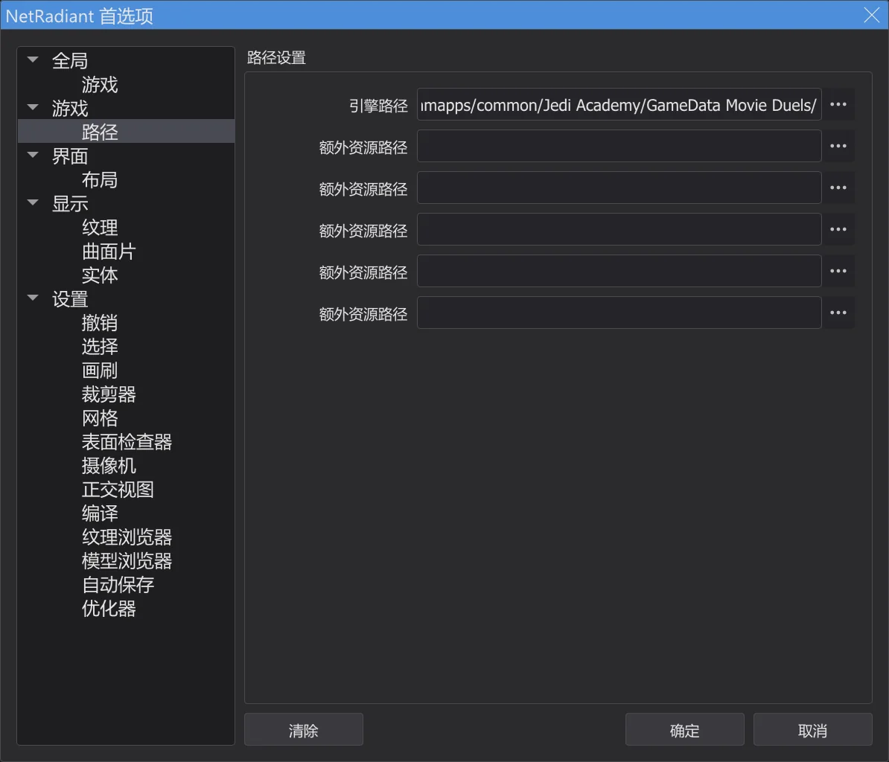
首选项,路径 页。 - 2
新地图。 文件 > 新建地图 新建一张空地图——只有 worldspawn。用鼠标滚轮把二维视图稍微缩小。
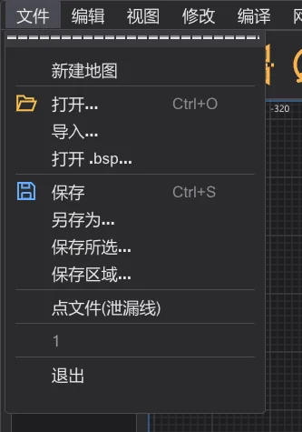
文件 菜单。 - 3
画一个画刷。 在二维俯视图中按住左键从一个角拖到另一个角——这里从 -256 -256 到 256 256,一个 512 单位宽的盒子。高度来自工作区(最初为 -64 到 64)。
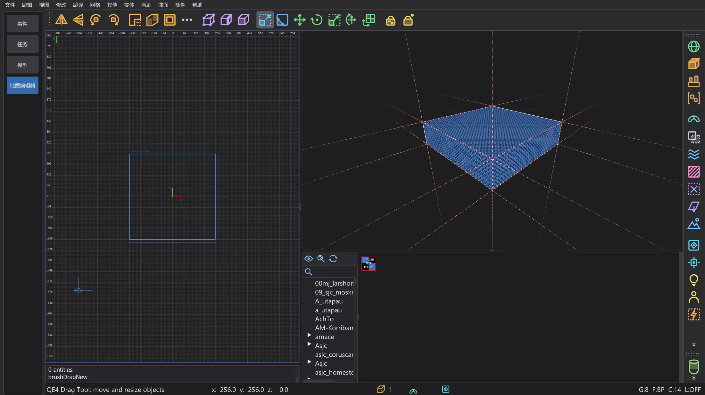
新画刷,已选中(红色)。 - 4
加高。 Num 1 把二维视图切换到前视图(XZ)。在上边缘稍上方按住并向上拖:顶面沿网格移动。这里拖到 192——房间现在高 256。Num 7 回到俯视图。
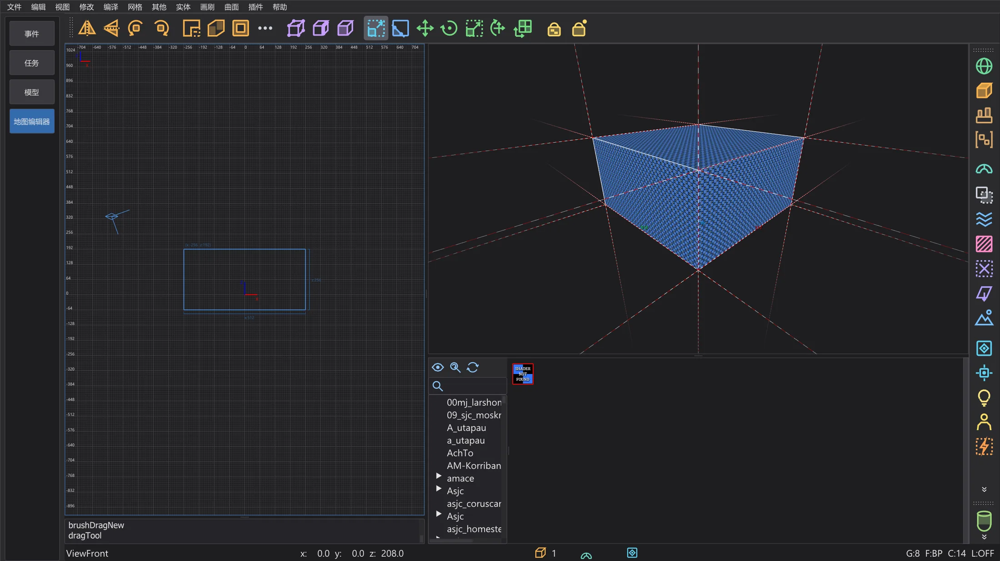
前视图:画刷现在高 256。 - 5
纹理。 在纹理浏览器的树中双击一个文件夹,然后用左键单击一个纹理:所选画刷的每个面都会使用它。墙壁请选择不透明的纹理。
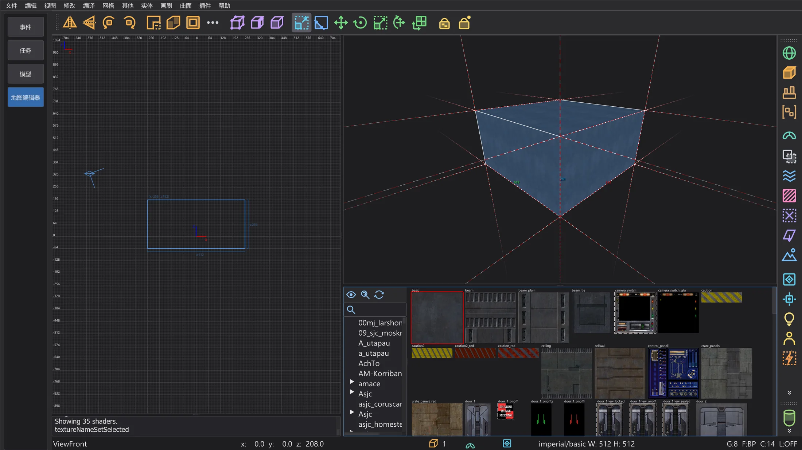
六个面都贴上了墙壁纹理。 - 6
挖空。 工具栏按钮 CSG 工具 打开 CSG 工具。厚度保持 16,先关闭 caulk 按钮(之后由 AutoCaulk 完成),然后按 挖空::拉出面:六面 16 厚的墙向外长在房间周围,内部正好是你画的盒子。工具栏按钮 Room(Make Room)以网格大小为厚度做同样的事。
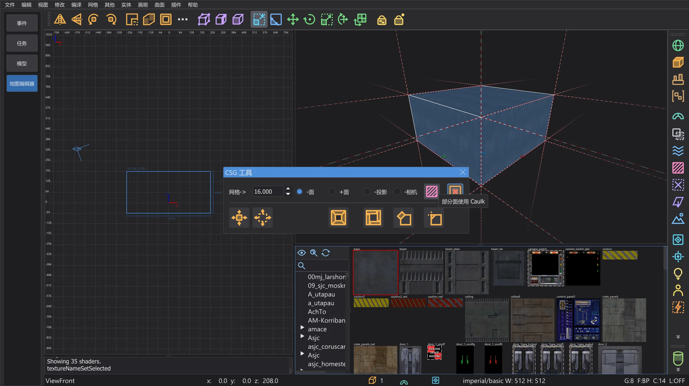
关闭 caulk 按钮的 CSG 工具。 - 7
地面纹理。 在前视图中,Shift + 左键单击地面只选中地面画刷;在浏览器中单击一个地面纹理。Esc 取消选择。
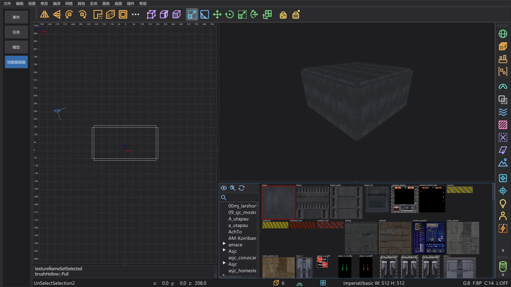
挖空的房间:六个墙画刷。 - 8
一盏灯。 在二维视图中右键单击房间内部:实体菜单打开。light 会询问亮度(300 是不错的起点)——OK 把它放在你单击的位置。
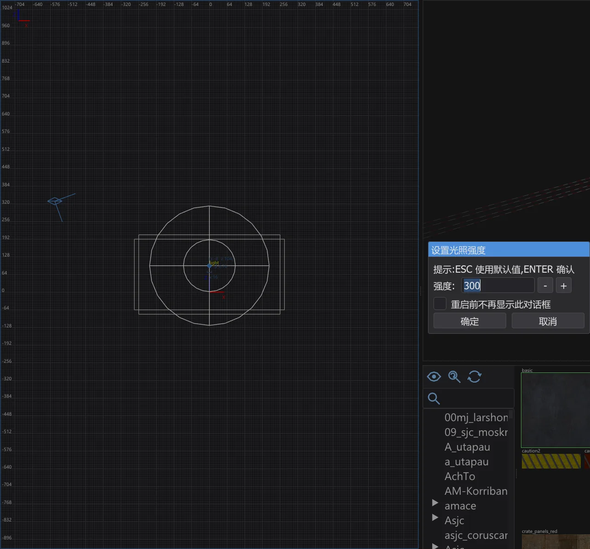
设置光照强度。 - 9
玩家从哪里开始。 在靠近地面处右键单击:info > info_player_start。没有它,游戏不知道把玩家放在哪里。它的方框立在地面上。
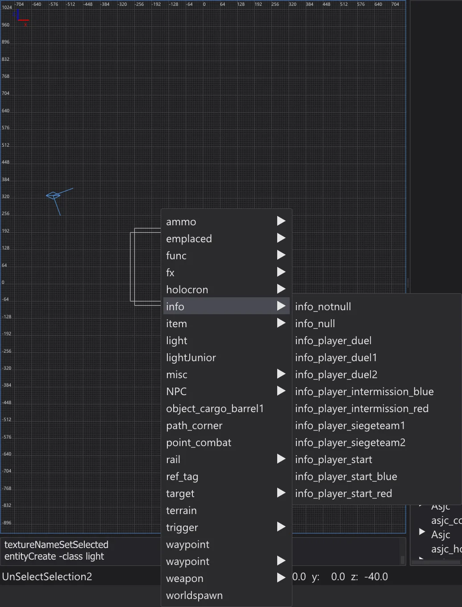
实体菜单的 info 子菜单。 - 10
保存。 文件 > 另存为——例如保存为你自己的
maps文件夹中的meinekarte.map,不要放在游戏文件夹里。文件名就是游戏中地图的名称。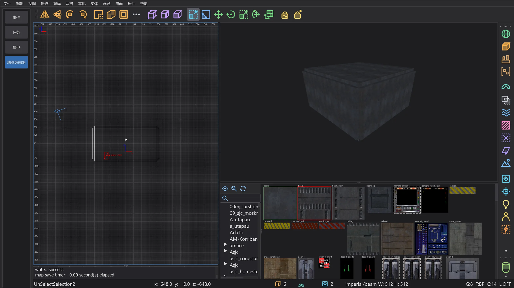
编辑器中已保存的房间。 - 11
外侧使用 caulk。 没人看得见的面仍会占用光照贴图空间和绘制时间。把摄像机飞进房间,在俯视图中按住 Shift + 右键拖一个矩形框住整个房间,然后按 F4(画刷 > 自动填缝所选):从内部看不到的每个面都会变成 caulk。也可以从一开始就用 caulk 搭建:给新画刷 caulk 纹理,只给看得见的面上纹理。
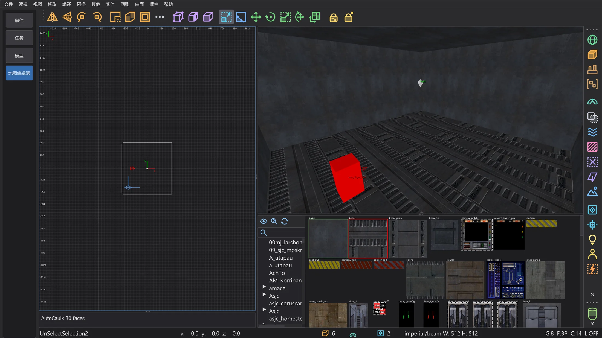
AutoCaulk 之后:摄像机在房间内。 - 12
检查。 编译 > 优化器 在编译前统计游戏的限制并查找编译问题。绿色的房间没有需要修复的地方。
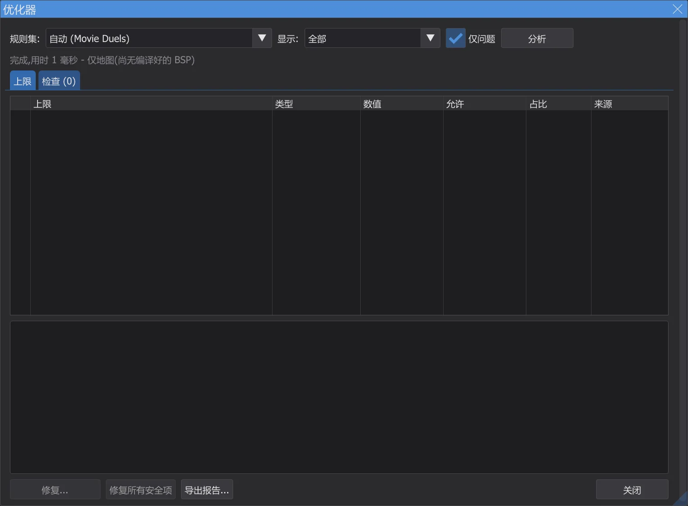
教程房间的优化器。 - 13
编译。 编译 > [Final] Fast 运行三次 q3map2——BSP、VIS 以及带反弹的光照。进度窗口显示阶段、进度和剩余时间。如果地图有泄漏,控制台会用红色提示,二维视图中的一条线会显示通往外部的路径——见 地图编辑器:编译地图。
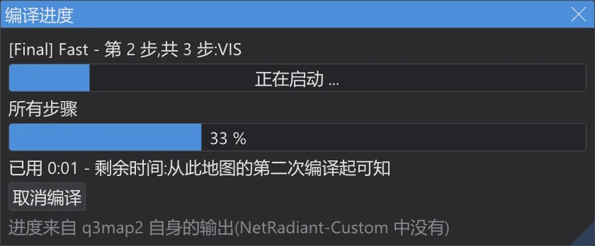
编译期间的进度窗口。 - 14
走一遍。 视图 > 游玩:从 info_player_start 开始,然后 在编辑器中游玩(F6):你站在 info_player_start 处,用 W A S D 行走,空格 跳跃;Esc 结束。即使不编译也可以——碰撞直接来自画刷(见 在编辑器中试玩)。
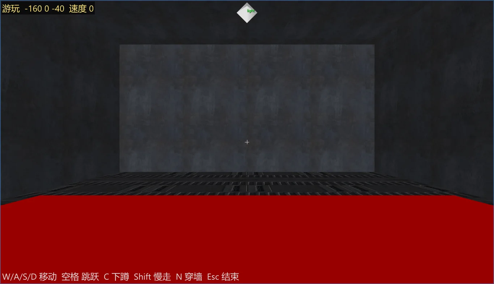
在编辑器中穿过房间。 - 15
放进游戏。 编译 > 将地图打包为 .pk3 把
maps/meinekarte.bsp打包为 .bsp 旁的meinekarte.pk3。程序从不写入游戏文件夹——请自行把 .pk3 复制到GameData/base(Jedi Academy、Jedi Outcast)或你的模组文件夹(例如 Movie Duels)。启动游戏,用 Shift+~ 打开控制台,输入devmap meinekarte。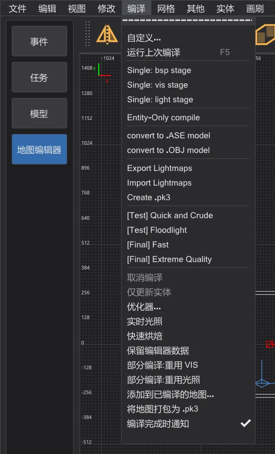
带有 将地图打包为 .pk3 的 编译(NetRadiant-Custom 中没有)。


下一步#
- 画刷、裁剪器、面片和 CSG 工具:地图编辑器:建造工具。
- Build 菜单、泄漏、门户和编译文件夹:地图编辑器:编译地图;更快的重新编译:地图编辑器:编译进度与部分编译。
- 游戏的限制与修复:地图编辑器:优化器与限制;摄像机中的光照预览:地图编辑器:速度与实时光照。
- 地形、逻辑视图、镜像模式和在编辑器中试玩:地图编辑器:地形、试玩、逻辑、镜像及更多。
- 在你的地图上制作过场动画:你自己的任务:在 Taspir 起飞。